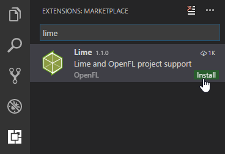
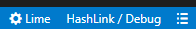
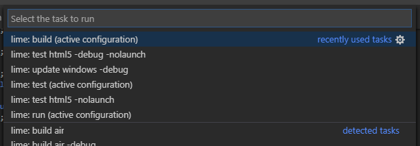
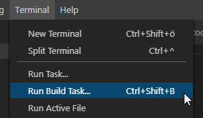
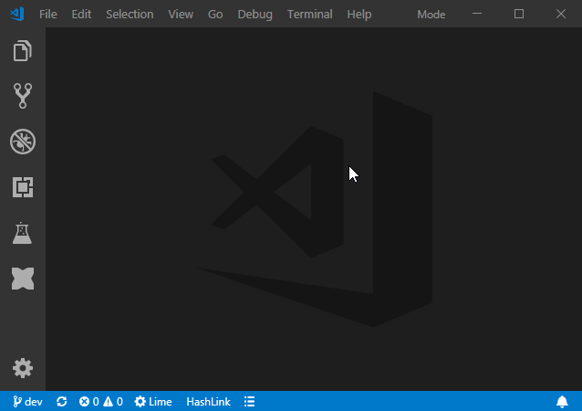
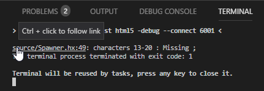
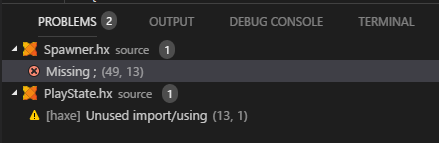
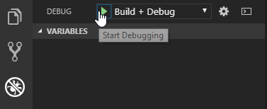
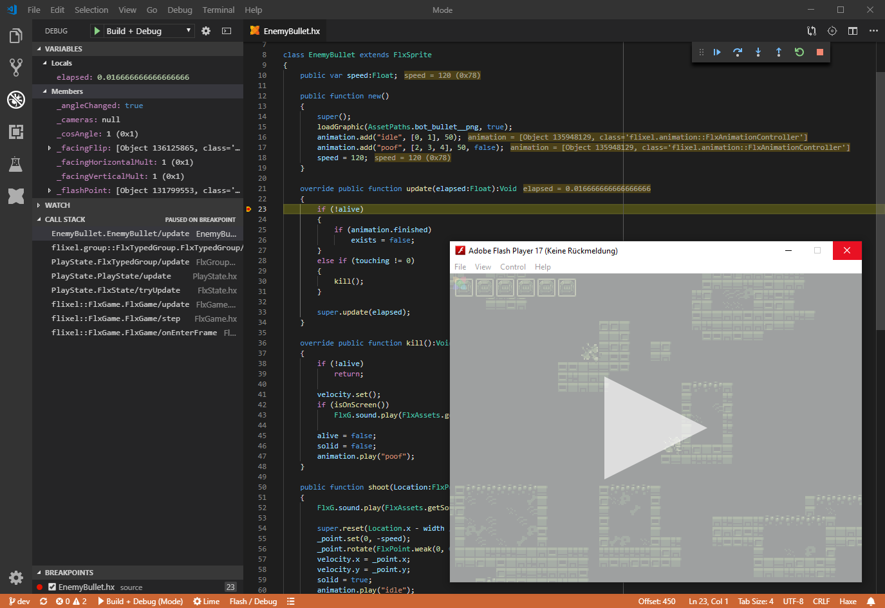

Visual Studio Code
EditVisual Studio Code is an open-source, cross-platform, lightweight code editor by Microsoft. The Haxe extension seamlessly integrates with the compiler's IDE services and uses them for:
- Code Completion
- Go to Definition
- Go to Symbol
- Find Usages
- Finding Unused Imports
- etc...
You can find detailed documentation for the Haxe extension in the Wiki, this page focuses on the Flixel-specific parts.
Installation
- Download and install the latest version of Visual Studio Code.
Go to the Extensions tab and install the Lime extension. This automatically installs the Haxe extension as well.

Project Configuration
VSCode stores its project-specific settings in a .vscode subfolder - flixel-tools can create one with sensible defaults for Flixel projects. Just select VSCode as your preferred editor during the setup command, or add -ide vscode to the command you're running.
Note: make sure you have the latest versions of flixel-tools and flixel-templates:
haxelib update flixel-tools
haxelib update flixel-templates
You have several options for creating projects with a .vscode configuration:
Create a new, empty project:
flixel template -n "VSCodeTest" -ide vscodeCreate a new project based on one of the demos:
flixel create -ide vscodeAdd the
.vscodefolder to a project that already exists, for instance the current working directory:flixel configure . -ide vscodeAdd VSCode config files to an entire directory of projects, like flixel-demos:
flixel configure C:\HaxeToolkit\haxe\lib\flixel-demos\git -ide vscode
Code Completion
Once you've installed the Lime extension and have a project with a .vscode folder, just open it with File -> Open Folder. If the workspace was correctly detected as a Lime project (needs a Project.xml file), you should notice these dropdown menus appearing in the status bar:

Code completion features should work out of the box now:

If you're having trouble, please refer to the Haxe extension's Troubleshooting guide.
Building
Building and running your projects in VSCode is done through tasks. You can view the list of available tasks via Tasks -> Run Task...:

To build and run your project, select the lime: test task. With Flixel's template, this is configured as the default build task, so you can also invoke it directly via Tasks -> Run Build Task... or by pressing Ctrl+Shift+B:

You may want to assign a shortcut to Run Task... or change the shortcut for Run Build Task... to something more convenient such as F5. You can do so in File -> Preferences -> Keyboard Shortcuts.
Finally, you can change the current configuration (combination of target and Debug/Release/Final) by using the dropdown menu in the status bar:

Compiler Errors / Problems View
By default, compiler errors and warnings are shown in the Terminal view at the bottom of the screen. You can navigate to the source of the error via Ctrl+Click on the file path:

Alternatively, you can switch to the Problems tab which has a nicer presentation. It shows errors / warnings from compilation as well as diagnostics that are updated each time you save a file:

Debugging
The .vscode template from flixel-tools already includes the launch.json needed for debugging. The Lime "Build + Debug" / "Debug" launch configurations support debugging with the following targets / extensions:
- Windows/Linux/Mac via HXCPP Debugger
- HTML5 via Debugger for Chrome
- Flash via Flash Debugger
Simply "Start Debugging" with the "Build + Debug" launch configuration (make sure the "Debug" configuration for the target you want to debug is selected in the status bar). This first builds the project and then starts the debugger.

Here's what it should look like when you hit a breakpoint:

There is also a Macro launch configuration for debugging Haxe Macros.